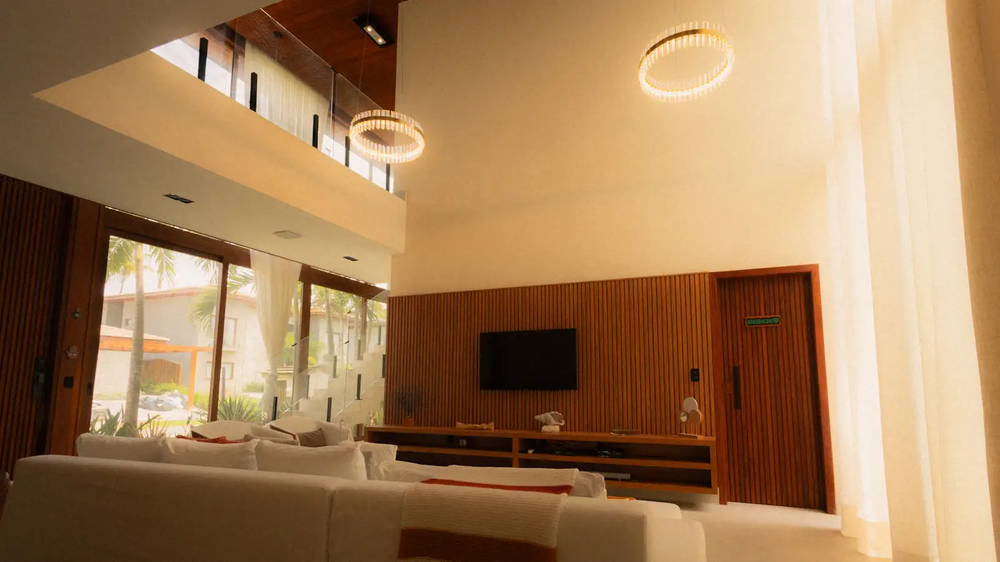
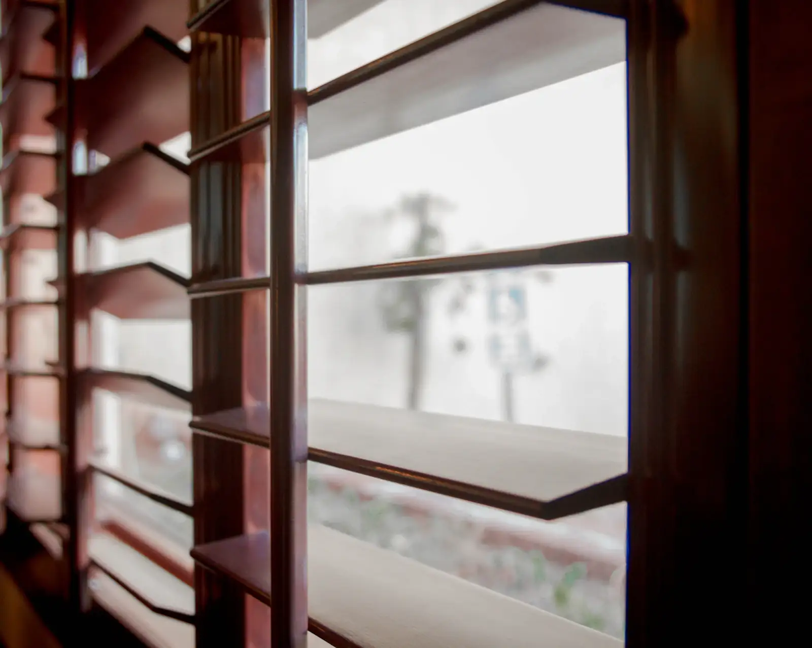
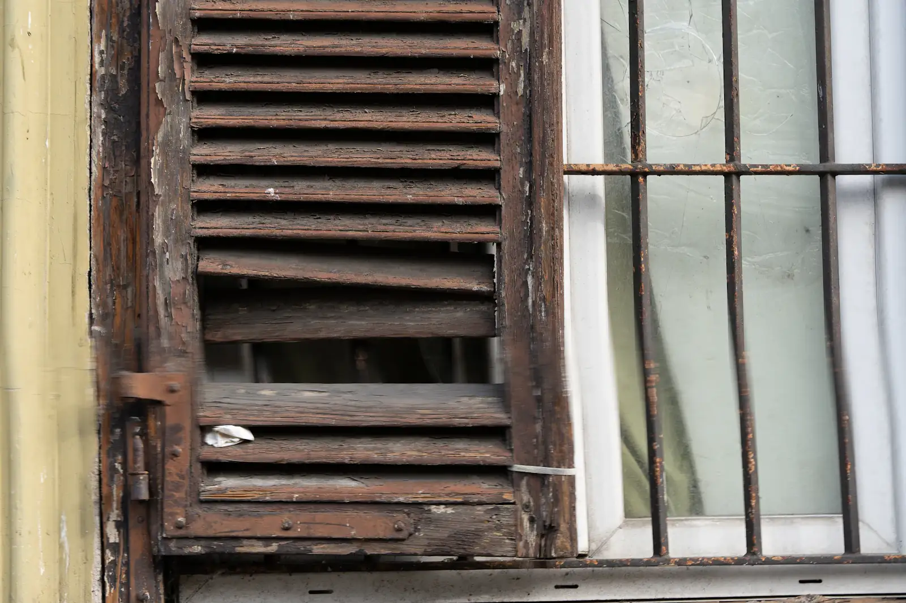

Cinco coisas que a gente faz direito.
Do projeto sem obra à obra com manutenção por cinco anos. Escolha o que precisa; se não souber, a primeira visita serve para isso.
Se não está na lista, provavelmente indicamos alguém melhor.
FL. 03 · 01
Reforma residencial completa
Do projeto à entrega da chave.
A gente desenha, orça, contrata, compra e executa. Você conversa com uma pessoa só do começo ao fim, recebe o diário toda sexta e, no último dia, a chave e o manual da casa.
Serve para quem quer reformar sem virar gerente de obra. O mesmo arquiteto que desenhou visita o canteiro duas vezes por semana, e o Seu Raimundo não deixa passar parede fora de prumo.
- Para quem
- Casas e apartamentos a partir de 50 m²
- Prazo típico
- 4 a 8 meses de obra
- Investimento
- R$ 1.900 a R$ 3.800/m², conforme o padrão
- Garantia
- 5 anos estrutural, 1 ano acabamento
Pedir uma visita para este serviço Ver uma obra deste tipo: Casa Pitangui

FL. 03 · 02
Projeto de arquitetura e interiores
Sem execução, para quem já tem equipe.
Entregamos o executivo detalhado a ponto do seu empreiteiro não precisar adivinhar nada: paginação de piso, cortes de marcenaria, cada ponto elétrico cotado.
Incluímos duas visitas de obra para tirar dúvida no canteiro. Se depois você quiser que a gente execute, metade do valor do projeto é abatida da obra.
- Para quem
- Quem já tem empreiteiro de confiança
- Prazo típico
- 6 a 10 semanas
- Investimento
- A partir de R$ 95/m² (interiores) ou R$ 140/m² (completo)
- Inclui
- 2 visitas de obra e compatibilização
Pedir uma visita para este serviço Ver uma obra deste tipo: Apartamento Areia Preta
FL. 03 · 03
Retrofit para clima quente
Ventilação cruzada, brises, telhado verde, troca de esquadrias.
Natal tem vento quase o ano inteiro, e a maioria das casas foi construída de costas para ele. Reabrimos o caminho do ar, sombreamos a fachada que pega sol da tarde e trocamos esquadria que só serve para fechar.
Medimos a conta de luz antes e depois, por doze meses. Sem medição, é só opinião.
- Economia média
- 31%, medida em 40 obras
- Recorde
- 38%, Pousada Maracajaú
- Prazo típico
- 2 a 5 meses
- Acréscimo na obra
- +12% sobre a reforma
Pedir uma visita para este serviço Ver uma obra deste tipo: Pousada Maracajaú

FL. 03 · 04
Reforma comercial
Lojas, consultórios e restaurantes, com obra noturna para não fechar as portas.
Quando o negócio não pode parar, a obra vira noturna: a equipe entra às 22h, sai às 6h e deixa o salão varrido para abrir.
O pó fica atrás de divisória, a máquina de café fica coberta e o cliente da manhã não percebe nada além do piso novo.
- Para quem
- Lojas, consultórios, cafés e restaurantes
- Recorde
- 41 noites seguidas, Café Cardume
- Dias de faturamento perdidos
- 0
- Prazo típico
- 6 semanas a 4 meses
Pedir uma visita para este serviço Ver uma obra deste tipo: Café Cardume

FL. 03 · 05
Laudo e manutenção preventiva
Vistoria anual, plano de manutenção de 5 anos.
Uma visita por ano, com laudo assinado e um plano para os próximos cinco: o que pintar, o que vedar, o que trocar e quando. Maresia não perdoa quem esquece.
Serve para casas nossas e de outros, inclusive a que você acabou de comprar e ainda não sabe o que esconde.
- Vistoria
- Anual, com relatório fotográfico
- Plano
- Manutenção para 5 anos
- Documento
- ART/RRT emitida
- Investimento
- A partir de R$ 650 por visita

Não sabe qual é o seu caso?
Na primeira visita a gente olha a casa e diz o que faz sentido, inclusive se for nada. Sem custo, sem compromisso.
Marcar uma visita Ou chamar no WhatsApp, (84) 99188-0412